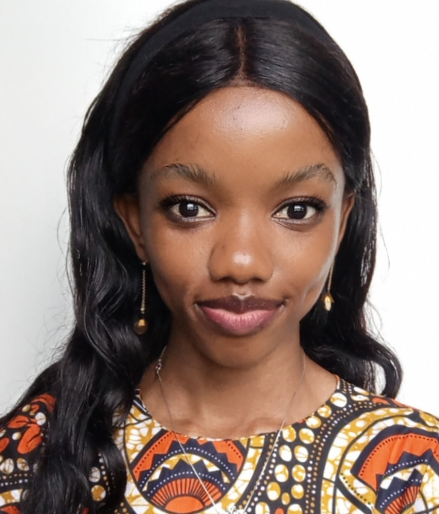

Lois Messie Soluka | WDD 130
Hello! My name is Lois Messie Soluka and I am from Congo, Kinshasa. I enjoy reading books, talking with loved ones, listerning to music and outdoors activities.
Hello! My name is Lois Messie Soluka and I am from Congo, Kinshasa. I enjoy reading books, talking with loved ones, listerning to music and outdoors activities.